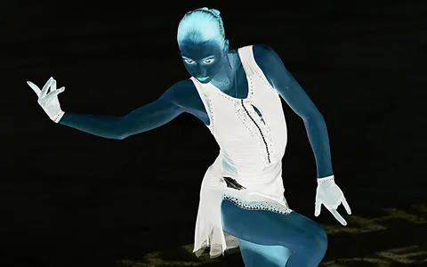
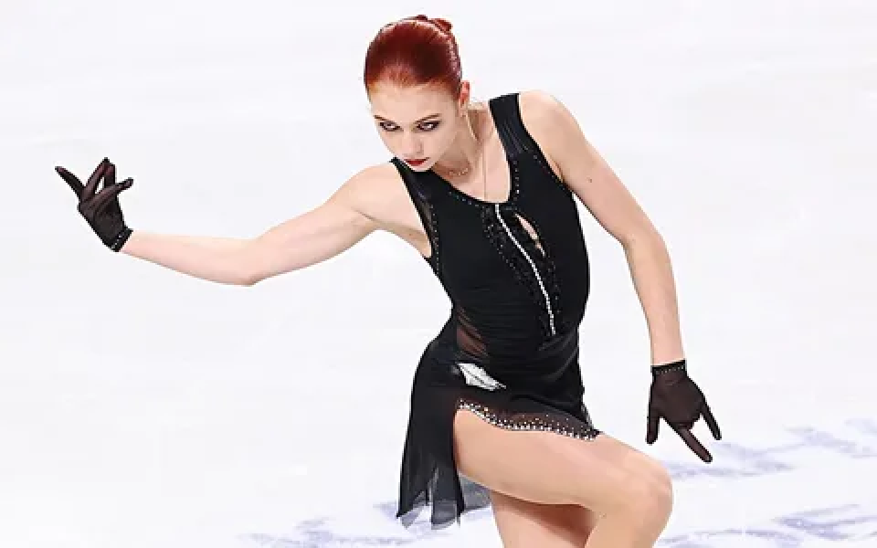

<h1 id="цветовые-модели">1. Цветовые модели</h1>
<h2 id="исходное-изображение">Исходное изображение</h2>
<figure>

<figcaption aria-hidden="true">Исходное изображение</figcaption>
</figure>
<h3 id="выделить-компоненты-r-g-b">1.1. Выделить компоненты R, G, B</h3>
<p><strong>Компонент R</strong><br />
</p>
<p><strong>Компонент G</strong><br />
</p>
<p><strong>Компонент B</strong><br />
</p>
<hr />
<h3 id="привести-изображение-к-цветовой-модели-hsi">1.2. Привести
изображение к цветовой модели HSI</h3>
<figure>

<figcaption aria-hidden="true">HSI</figcaption>
</figure>
<hr />
<h3 id="инвертировать-яркостную-компоненту">1.3. Инвертировать яркостную
компоненту</h3>
<figure>

<figcaption aria-hidden="true">Инвертированная яркость</figcaption>
</figure>
<hr />
<h1 id="передискретизация">2. Передискретизация</h1>
<h3 id="растяжение-интерполяция-изображения-в-m-раз">2.1. Растяжение
(интерполяция) изображения в M раз</h3>
<figure>

<figcaption aria-hidden="true">Интерполяция</figcaption>
</figure>
<hr />
<h3 id="сжатие-децимация-изображения-в-n-раз">2.2. Сжатие (децимация)
изображения в N раз</h3>
<figure>

<figcaption aria-hidden="true">Децимация</figcaption>
</figure>
<hr />
<h3
id="передискретизация-изображения-в-k-m-n-раз-путём-растяжения-и-последующего-сжатия">2.3.
Передискретизация изображения в (K = M / N) раз путём растяжения и
последующего сжатия</h3>
<figure>

<figcaption aria-hidden="true">Передискретизация M/N</figcaption>
</figure>
<hr />
<h3 id="передискретизация-изображения-в-k-раз-за-один-проход">2.4.
Передискретизация изображения в (K) раз за один проход</h3>
<figure>

<figcaption aria-hidden="true">Передискретизация K</figcaption>
</figure>
